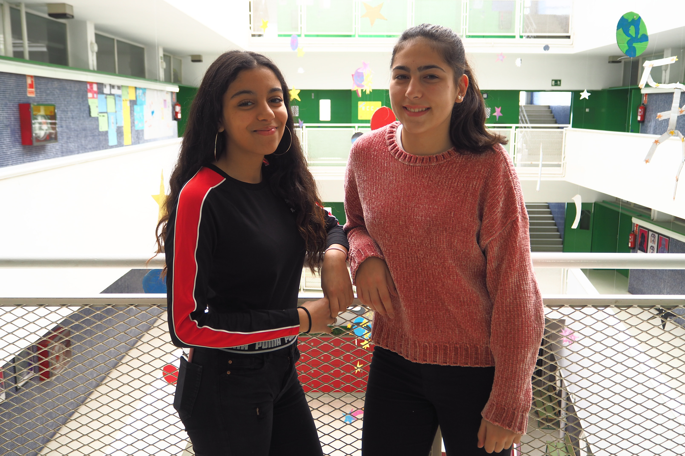
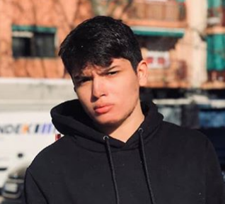

Proyecto Migracions'19
Barres i ones
Proyecto Migracions'19
Barres i ones
Biografia
Entrevista
Ingredientes
Receta
Alumnos

Somos Yasmina Soussi y Marina Àvila, hemos participado en el proyecto de migraciones, hemos entrevistado a nuestro profesor de catalán, Ferran. En este proyecto hemos aprendido la diversidad de platos que hay, costumbres, hemos trabajado edición de vídeo, infografía y hemos conocido diferentes experiencias de inmigraciones. Deseamos que os guste !!

Hola, soy Stuard Hidalgo Orquera, diseñador de esta página.